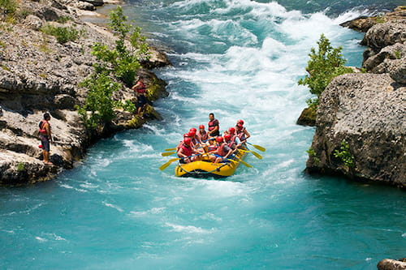
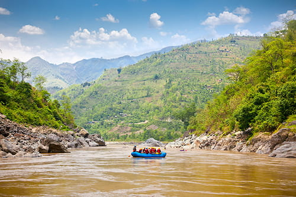

Passeios
Prepare-se para a maior descarga de adrenalina da sua vida com a Rio Selvagem Rafting! Sinta a força das corredeiras, desafie os seus limites e viva uma aventura inesquecível em meio à natureza mais pura. Você está pronto para domar o rio?.

Não importa se é a sua primeira vez ou se você já é um veterano do rafting: nossa equipe de guias certificados garante uma experiência totalmente segura e cheia de diversão. Equipamentos de última geração e instruções completas estão inclusos para que você só se preocupe em curtir a descida.
É so escolher uma das nossas aventuras!

Desafio Rio Paraibuna: Força e Natureza Selvagem
Se você quer sentir o verdadeiro poder das águas, o Rio Paraibuna é o seu destino. Conhecido por seu volume de água impressionante e corredeiras contínuas, este percurso exige energia e garante uma lavagem de alma completa. Navegaremos por trechos de mata atlântica preservada, enfrentando ondas e refluxos desafiadores que fazem o coração bater mais forte. É a combinação perfeita entre desafio técnico e paisagens selvagens.

Travessia Rio Mambucaba: Da Serra do Mar ao Oceano
Imagine descer um rio cristalino que corta o Parque Nacional da Serra da Bocaina. O rafting no Rio Mambucaba une a emoção técnica das corredeiras com um visual paradisíaco de floresta tropical. Além dos saltos e ondas nas águas rápidas, o percurso conta com pontos estratégicos para mergulho em piscinas naturais de águas transparentes. Uma jornada inesquecível que conecta a adrenalina da serra com a energia do litoral.
Expedição Jacaré Pepira: O Coração do Rafting Brasileiro
Prepare-se para desbravar o rio que é referência nacional em esportes de aventura. O Rio Jacaré Pepira oferece uma descida eletrizante com corredeiras de classe III e IV, perfeitas para quem busca muita emoção. Entre quedas d'água impressionantes e formações rochosas exuberantes, você e sua equipe vão testar a sincronia na remada em um cenário de tirar o fôlego. Uma experiência intensa, segura e com adrenalina do início ao fim!